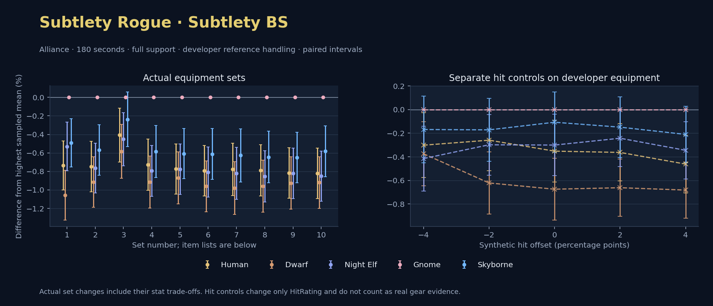

Alliance · Human / Dwarf / Night Elf / Gnome / Skyborne

No pet or guardian appears in the reference combat metrics. Reference: Human, developer equipment, 180 seconds and full support. Pet choices remain those of the developer build.
WoWSims developer · Backstab Subtlety
Unimplemented enchant or active set effects: [{"id": 1676, "pieces": 3, "effects": ["Restores 15 health per 5 sec."]}, {"id": 1676, "pieces": 5, "effects": ["When struck in combat, has a 5% chance to remove a Snare effect from yourself. Can only occur once every 60 sec."]}]
Unmeasured proc rates: [{"source": "set", "id": 1676, "pieces": 4, "kind": "ppm", "origin": "unknown"}, {"source": "item", "id": 19324, "name": "The Lobotomizer", "kind": "ppm", "origin": "vanilla"}, {"source": "enchant", "id": 1900, "name": "Enchant Weapon - Crusader", "kind": "ppm", "origin": "vanilla"}, {"source": "item", "id": 871, "name": "Flurry Axe", "kind": "ppm", "origin": "vanilla"}]
180 seconds, full support and original developer references. Hit below is generic sheet melee / spell hit; school and talent bonuses can be attached directly to spells.
| Race | DPS | Gap and interval | Generic hit | Replay |
|---|---|---|---|---|
| Gnome | 650.35 | +0.000% ± 0.000 | 10.4% / 10.4% | Native input · Website JSON |
| Skyborne | 647.15 | -0.492% ± 0.260 | 10.4% / 10.4% | Native input · Website JSON |
| Night Elf | 646.90 | -0.532% ± 0.263 | 10.4% / 10.4% | Native input · Website JSON |
| Human | 645.57 | -0.736% ± 0.264 | 10.4% / 10.4% | Native input · Website JSON |
| Dwarf | 643.47 | -1.058% ± 0.268 | 11.4% / 11.4% | Native input · Website JSON |
| Slot | Item | ID | Enchant |
|---|---|---|---|
| Head | Darkmantle Cap | 226829 | Lesser Arcane Amalgamation |
| Neck | Beads of Ogre Might | 22150 | |
| Shoulder | Theramore Pauldrons | 271955 | |
| Back | Earthweave Cloak | 21187 | Enchant Cloak - Agility |
| Chest | Darkmantle Tunic | 226825 | Enchant Chest - Living Stats |
| Wrist | Darkmantle Bracers | 226830 | Enchant Bracer - Agility |
| Hands | Darkmantle Grips | 226828 | Enchant Gloves - Greater Agility |
| Waist | Assassin's Waistguard | 272395 | |
| Legs | Darkmantle Pants | 226827 | Lesser Arcane Amalgamation |
| Feet | Darkmantle Footpads | 226831 | Enchant Boots - Minor Speed |
| Ring 1 | Don Julio's Band | 19325 | |
| Ring 2 | Might of Cenarius | 21189 | |
| Trinket 1 | Adaptive Combat Assistant | 272437 | |
| Trinket 2 | Rune of the Guard Captain | 19120 | |
| Main hand | The Lobotomizer | 19324 | Enchant Weapon - Crusader |
| Off hand | Flurry Axe | 871 | Enchant Weapon - Agility |
| Ranged / relic | Fahrad's Reloading Repeater | 22347 |
Published ranked alternatives · Published pre-raid
Recorded source replacements: [{"slot": "head", "from": 11735, "to": 252482, "publishedAlternativeRank": 1, "publishedEpDelta": -2.7, "reason": "First published alternative compatible with the current WoWSims database, class, faction and occupied slots."}, {"slot": "back", "from": 13340, "to": 272414, "publishedAlternativeRank": 1, "publishedEpDelta": -7.6, "reason": "First published alternative compatible with the current WoWSims database, class, faction and occupied slots."}, {"slot": "finger2", "from": 17713, "to": 285190, "publishedAlternativeRank": 2, "publishedEpDelta": -16.6, "reason": "First published alternative compatible with the current WoWSims database, class, faction and occupied slots."}, {"slot": "trinket2", "from": 13171, "to": 274759, "publishedAlternativeRank": 1, "publishedEpDelta": -1.3, "reason": "First published alternative compatible with the current WoWSims database, class, faction and occupied slots."}, {"slot": "ranged", "from": 2100, "to": 13023, "publishedAlternativeRank": 1, "publishedEpDelta": -3.5, "reason": "First published alternative compatible with the current WoWSims database, class, faction and occupied slots."}]
Unimplemented enchant or active set effects: [{"id": 143, "pieces": 2, "effects": ["Improves your chance to hit by 2.0%."]}]
Unmeasured proc rates: [{"source": "enchant", "id": 1900, "name": "Enchant Weapon - Crusader", "kind": "ppm", "origin": "vanilla"}, {"source": "enchant", "id": 1900, "name": "Enchant Weapon - Crusader", "kind": "ppm", "origin": "vanilla"}]
180 seconds, full support and original developer references. Hit below is generic sheet melee / spell hit; school and talent bonuses can be attached directly to spells.
| Race | DPS | Gap and interval | Generic hit | Replay |
|---|---|---|---|---|
| Gnome | 599.07 | +0.000% ± 0.000 | 5.5% / 5.5% | Native input · Website JSON |
| Skyborne | 595.67 | -0.568% ± 0.273 | 5.5% / 5.5% | Native input · Website JSON |
| Human | 594.59 | -0.748% ± 0.271 | 5.5% / 5.5% | Native input · Website JSON |
| Night Elf | 594.49 | -0.764% ± 0.270 | 5.5% / 5.5% | Native input · Website JSON |
| Dwarf | 593.58 | -0.916% ± 0.274 | 6.5% / 6.5% | Native input · Website JSON |
| Slot | Item | ID | Enchant |
|---|---|---|---|
| Head | Blue Suede Hat | 252482 | Lesser Arcane Amalgamation |
| Neck | Skibi's Pendant | 13089 | Enchant Necklace - Agility |
| Shoulder | Shadowcraft Spaulders | 16708 | |
| Back | Howler's Furs | 272414 | Enchant Cloak - Agility |
| Chest | Dawn Armor | 252483 | Enchant Chest - Greater Stats |
| Wrist | Shadowcraft Bracers | 16710 | Enchant Bracer - Agility |
| Hands | Devilsaur Gauntlets | 15063 | Enchant Gloves - Greater Agility |
| Waist | Assassin's Waistguard | 272395 | |
| Legs | Devilsaur Leggings | 15062 | Lesser Arcane Amalgamation |
| Feet | Shadowcraft Boots | 16711 | Enchant Boots - Greater Agility |
| Ring 1 | Cutthroat's Signet | 272408 | |
| Ring 2 | Wyvern Heart Band | 285190 | |
| Trinket 1 | Adaptive Combat Assistant | 272437 | |
| Trinket 2 | Everlook Pathcarver | 274759 | |
| Main hand | Heartseeker | 12783 | Enchant Weapon - Crusader |
| Off hand | Scarlet Kris | 5267 | Enchant Weapon - Crusader |
| Ranged / relic | Eaglehorn Long Bow | 13023 |
Published one-slot hit alternative · Published pre-raid
One source-listed alternative; at least 80% of the source slot score retained. Reported hit selects the contrast; only native stats determine simulation outcomes. This is an experimental combination, not an endorsed best set.
Recorded source replacements: [{"slot": "head", "from": 11735, "to": 252482, "publishedAlternativeRank": 1, "publishedEpDelta": -2.7, "reason": "First published alternative compatible with the current WoWSims database, class, faction and occupied slots."}, {"slot": "back", "from": 13340, "to": 272414, "publishedAlternativeRank": 1, "publishedEpDelta": -7.6, "reason": "First published alternative compatible with the current WoWSims database, class, faction and occupied slots."}, {"slot": "finger2", "from": 17713, "to": 285190, "publishedAlternativeRank": 2, "publishedEpDelta": -16.6, "reason": "First published alternative compatible with the current WoWSims database, class, faction and occupied slots."}, {"slot": "trinket2", "from": 13171, "to": 274759, "publishedAlternativeRank": 1, "publishedEpDelta": -1.3, "reason": "First published alternative compatible with the current WoWSims database, class, faction and occupied slots."}, {"slot": "ranged", "from": 2100, "to": 13023, "publishedAlternativeRank": 1, "publishedEpDelta": -3.5, "reason": "First published alternative compatible with the current WoWSims database, class, faction and occupied slots."}]
Unimplemented enchant or active set effects: [{"id": 143, "pieces": 2, "effects": ["Improves your chance to hit by 2.0%."]}]
Unmeasured proc rates: [{"source": "enchant", "id": 1900, "name": "Enchant Weapon - Crusader", "kind": "ppm", "origin": "vanilla"}, {"source": "enchant", "id": 1900, "name": "Enchant Weapon - Crusader", "kind": "ppm", "origin": "vanilla"}]
180 seconds, full support and original developer references. Hit below is generic sheet melee / spell hit; school and talent bonuses can be attached directly to spells.
| Race | DPS | Gap and interval | Generic hit | Replay |
|---|---|---|---|---|
| Gnome | 590.78 | +0.000% ± 0.000 | 4.5% / 4.5% | Native input · Website JSON |
| Skyborne | 589.38 | -0.237% ± 0.294 | 4.5% / 4.5% | Native input · Website JSON |
| Human | 588.38 | -0.407% ± 0.292 | 4.5% / 4.5% | Native input · Website JSON |
| Night Elf | 588.11 | -0.452% ± 0.288 | 4.5% / 4.5% | Native input · Website JSON |
| Dwarf | 587.34 | -0.584% ± 0.291 | 5.5% / 5.5% | Native input · Website JSON |
| Slot | Item | ID | Enchant |
|---|---|---|---|
| Head | Blue Suede Hat | 252482 | Lesser Arcane Amalgamation |
| Neck | Skibi's Pendant | 13089 | Enchant Necklace - Agility |
| Shoulder | Shadowcraft Spaulders | 16708 | |
| Back | Howler's Furs | 272414 | Enchant Cloak - Agility |
| Chest | Timbermaw Tunic | 252484 | Enchant Chest - Greater Stats |
| Wrist | Shadowcraft Bracers | 16710 | Enchant Bracer - Agility |
| Hands | Devilsaur Gauntlets | 15063 | Enchant Gloves - Greater Agility |
| Waist | Assassin's Waistguard | 272395 | |
| Legs | Devilsaur Leggings | 15062 | Lesser Arcane Amalgamation |
| Feet | Shadowcraft Boots | 16711 | Enchant Boots - Greater Agility |
| Ring 1 | Cutthroat's Signet | 272408 | |
| Ring 2 | Wyvern Heart Band | 285190 | |
| Trinket 1 | Adaptive Combat Assistant | 272437 | |
| Trinket 2 | Everlook Pathcarver | 274759 | |
| Main hand | Heartseeker | 12783 | Enchant Weapon - Crusader |
| Off hand | Scarlet Kris | 5267 | Enchant Weapon - Crusader |
| Ranged / relic | Eaglehorn Long Bow | 13023 |
Published ranked alternatives · Published pre-raid
Recorded source replacements: [{"slot": "back", "from": 13340, "to": 272414, "publishedAlternativeRank": 1, "publishedEpDelta": -4.4, "reason": "First published alternative compatible with the current WoWSims database, class, faction and occupied slots."}, {"slot": "finger2", "from": 17713, "to": 285190, "publishedAlternativeRank": 2, "publishedEpDelta": -16.6, "reason": "First published alternative compatible with the current WoWSims database, class, faction and occupied slots."}, {"slot": "trinket2", "from": 13171, "to": 274759, "publishedAlternativeRank": 1, "publishedEpDelta": -1.3, "reason": "First published alternative compatible with the current WoWSims database, class, faction and occupied slots."}, {"slot": "ranged", "from": 2100, "to": 13023, "publishedAlternativeRank": 2, "publishedEpDelta": -3.5, "reason": "First published alternative compatible with the current WoWSims database, class, faction and occupied slots."}]
Unimplemented enchant or active set effects: [{"id": 142, "pieces": 2, "effects": ["10% chance of dealing 20 Nature damage on a successful melee attack."]}, {"id": 142, "pieces": 3, "effects": ["4% chance on melee attack of restoring 30 energy."]}]
Unmeasured proc rates: [{"source": "enchant", "id": 1900, "name": "Enchant Weapon - Crusader", "kind": "ppm", "origin": "vanilla"}, {"source": "enchant", "id": 1900, "name": "Enchant Weapon - Crusader", "kind": "ppm", "origin": "vanilla"}]
180 seconds, full support and original developer references. Hit below is generic sheet melee / spell hit; school and talent bonuses can be attached directly to spells.
| Race | DPS | Gap and interval | Generic hit | Replay |
|---|---|---|---|---|
| Gnome | 588.10 | +0.000% ± 0.000 | 6.3% / 6.3% | Native input · Website JSON |
| Skyborne | 584.66 | -0.585% ± 0.282 | 6.3% / 6.3% | Native input · Website JSON |
| Human | 583.81 | -0.729% ± 0.277 | 6.3% / 6.3% | Native input · Website JSON |
| Night Elf | 583.43 | -0.793% ± 0.275 | 6.3% / 6.3% | Native input · Website JSON |
| Dwarf | 582.71 | -0.916% ± 0.281 | 7.3% / 7.3% | Native input · Website JSON |
| Slot | Item | ID | Enchant |
|---|---|---|---|
| Head | Shadowcraft Cap | 16707 | Lesser Arcane Amalgamation |
| Neck | Skibi's Pendant | 13089 | Enchant Necklace - Agility |
| Shoulder | Stormshroud Shoulders | 15058 | |
| Back | Howler's Furs | 272414 | Enchant Cloak - Agility |
| Chest | Dawn Armor | 252483 | Enchant Chest - Greater Stats |
| Wrist | Shadowcraft Bracers | 16710 | Enchant Bracer - Agility |
| Hands | Stormshroud Gloves | 21278 | Enchant Gloves - Greater Agility |
| Waist | Assassin's Waistguard | 272395 | |
| Legs | Stormshroud Pants | 15057 | Lesser Arcane Amalgamation |
| Feet | Shadowcraft Boots | 16711 | Enchant Boots - Greater Agility |
| Ring 1 | Cutthroat's Signet | 272408 | |
| Ring 2 | Wyvern Heart Band | 285190 | |
| Trinket 1 | Adaptive Combat Assistant | 272437 | |
| Trinket 2 | Everlook Pathcarver | 274759 | |
| Main hand | Heartseeker | 12783 | Enchant Weapon - Crusader |
| Off hand | Scarlet Kris | 5267 | Enchant Weapon - Crusader |
| Ranged / relic | Eaglehorn Long Bow | 13023 |
Published one-slot hit alternative · Published pre-raid
One source-listed alternative; at least 80% of the source slot score retained. Reported hit selects the contrast; only native stats determine simulation outcomes. This is an experimental combination, not an endorsed best set.
Recorded source replacements: [{"slot": "back", "from": 13340, "to": 272414, "publishedAlternativeRank": 1, "publishedEpDelta": -4.4, "reason": "First published alternative compatible with the current WoWSims database, class, faction and occupied slots."}, {"slot": "finger2", "from": 17713, "to": 285190, "publishedAlternativeRank": 2, "publishedEpDelta": -16.6, "reason": "First published alternative compatible with the current WoWSims database, class, faction and occupied slots."}, {"slot": "trinket2", "from": 13171, "to": 274759, "publishedAlternativeRank": 1, "publishedEpDelta": -1.3, "reason": "First published alternative compatible with the current WoWSims database, class, faction and occupied slots."}, {"slot": "ranged", "from": 2100, "to": 13023, "publishedAlternativeRank": 2, "publishedEpDelta": -3.5, "reason": "First published alternative compatible with the current WoWSims database, class, faction and occupied slots."}]
Unimplemented enchant or active set effects: [{"id": 142, "pieces": 2, "effects": ["10% chance of dealing 20 Nature damage on a successful melee attack."]}, {"id": 142, "pieces": 3, "effects": ["4% chance on melee attack of restoring 30 energy."]}]
Unmeasured proc rates: [{"source": "enchant", "id": 1900, "name": "Enchant Weapon - Crusader", "kind": "ppm", "origin": "vanilla"}, {"source": "enchant", "id": 1900, "name": "Enchant Weapon - Crusader", "kind": "ppm", "origin": "vanilla"}]
180 seconds, full support and original developer references. Hit below is generic sheet melee / spell hit; school and talent bonuses can be attached directly to spells.
| Race | DPS | Gap and interval | Generic hit | Replay |
|---|---|---|---|---|
| Gnome | 582.42 | +0.000% ± 0.000 | 5.3% / 5.3% | Native input · Website JSON |
| Skyborne | 578.88 | -0.609% ± 0.271 | 5.3% / 5.3% | Native input · Website JSON |
| Human | 577.92 | -0.774% ± 0.272 | 5.3% / 5.3% | Native input · Website JSON |
| Night Elf | 577.90 | -0.777% ± 0.272 | 5.3% / 5.3% | Native input · Website JSON |
| Dwarf | 577.36 | -0.870% ± 0.281 | 6.3% / 6.3% | Native input · Website JSON |
| Slot | Item | ID | Enchant |
|---|---|---|---|
| Head | Shadowcraft Cap | 16707 | Lesser Arcane Amalgamation |
| Neck | Skibi's Pendant | 13089 | Enchant Necklace - Agility |
| Shoulder | Stormshroud Shoulders | 15058 | |
| Back | Howler's Furs | 272414 | Enchant Cloak - Agility |
| Chest | Timbermaw Tunic | 252484 | Enchant Chest - Greater Stats |
| Wrist | Shadowcraft Bracers | 16710 | Enchant Bracer - Agility |
| Hands | Stormshroud Gloves | 21278 | Enchant Gloves - Greater Agility |
| Waist | Assassin's Waistguard | 272395 | |
| Legs | Stormshroud Pants | 15057 | Lesser Arcane Amalgamation |
| Feet | Shadowcraft Boots | 16711 | Enchant Boots - Greater Agility |
| Ring 1 | Cutthroat's Signet | 272408 | |
| Ring 2 | Wyvern Heart Band | 285190 | |
| Trinket 1 | Adaptive Combat Assistant | 272437 | |
| Trinket 2 | Everlook Pathcarver | 274759 | |
| Main hand | Heartseeker | 12783 | Enchant Weapon - Crusader |
| Off hand | Scarlet Kris | 5267 | Enchant Weapon - Crusader |
| Ranged / relic | Eaglehorn Long Bow | 13023 |
Published ranked alternatives · Published pre-raid
Recorded source replacements: [{"slot": "head", "from": 11735, "to": 252482, "publishedAlternativeRank": 1, "publishedEpDelta": -2.7, "reason": "First published alternative compatible with the current WoWSims database, class, faction and occupied slots."}, {"slot": "back", "from": 13340, "to": 272414, "publishedAlternativeRank": 1, "publishedEpDelta": -7.6, "reason": "First published alternative compatible with the current WoWSims database, class, faction and occupied slots."}, {"slot": "finger2", "from": 17713, "to": 285190, "publishedAlternativeRank": 2, "publishedEpDelta": -16.6, "reason": "First published alternative compatible with the current WoWSims database, class, faction and occupied slots."}, {"slot": "ranged", "from": 2100, "to": 13023, "publishedAlternativeRank": 1, "publishedEpDelta": -3.5, "reason": "First published alternative compatible with the current WoWSims database, class, faction and occupied slots."}]
Unimplemented enchant or active set effects: [{"id": 143, "pieces": 2, "effects": ["Improves your chance to hit by 2.0%."]}]
Unmeasured proc rates: [{"source": "enchant", "id": 1900, "name": "Enchant Weapon - Crusader", "kind": "ppm", "origin": "vanilla"}, {"source": "enchant", "id": 1900, "name": "Enchant Weapon - Crusader", "kind": "ppm", "origin": "vanilla"}]
180 seconds, full support and original developer references. Hit below is generic sheet melee / spell hit; school and talent bonuses can be attached directly to spells.
| Race | DPS | Gap and interval | Generic hit | Replay |
|---|---|---|---|---|
| Gnome | 601.17 | +0.000% ± 0.000 | 5.5% / 5.5% | Native input · Website JSON |
| Skyborne | 597.49 | -0.613% ± 0.274 | 5.5% / 5.5% | Native input · Website JSON |
| Human | 596.41 | -0.792% ± 0.272 | 5.5% / 5.5% | Native input · Website JSON |
| Night Elf | 596.31 | -0.808% ± 0.271 | 5.5% / 5.5% | Native input · Website JSON |
| Dwarf | 595.39 | -0.961% ± 0.276 | 6.5% / 6.5% | Native input · Website JSON |
| Slot | Item | ID | Enchant |
|---|---|---|---|
| Head | Blue Suede Hat | 252482 | Lesser Arcane Amalgamation |
| Neck | Skibi's Pendant | 13089 | Enchant Necklace - Agility |
| Shoulder | Shadowcraft Spaulders | 16708 | |
| Back | Howler's Furs | 272414 | Enchant Cloak - Agility |
| Chest | Dawn Armor | 252483 | Enchant Chest - Greater Stats |
| Wrist | Shadowcraft Bracers | 16710 | Enchant Bracer - Agility |
| Hands | Devilsaur Gauntlets | 15063 | Enchant Gloves - Greater Agility |
| Waist | Assassin's Waistguard | 272395 | |
| Legs | Devilsaur Leggings | 15062 | Lesser Arcane Amalgamation |
| Feet | Shadowcraft Boots | 16711 | Enchant Boots - Greater Agility |
| Ring 1 | Cutthroat's Signet | 272408 | |
| Ring 2 | Wyvern Heart Band | 285190 | |
| Trinket 1 | Adaptive Combat Assistant | 272437 | |
| Trinket 2 | Molten Heart of the Mountain | 249470 | |
| Main hand | Heartseeker | 12783 | Enchant Weapon - Crusader |
| Off hand | Scarlet Kris | 5267 | Enchant Weapon - Crusader |
| Ranged / relic | Eaglehorn Long Bow | 13023 |
Published one-slot hit alternative · Published pre-raid
One source-listed alternative; at least 80% of the source slot score retained. Reported hit selects the contrast; only native stats determine simulation outcomes. This is an experimental combination, not an endorsed best set.
Recorded source replacements: [{"slot": "head", "from": 11735, "to": 252482, "publishedAlternativeRank": 1, "publishedEpDelta": -2.7, "reason": "First published alternative compatible with the current WoWSims database, class, faction and occupied slots."}, {"slot": "back", "from": 13340, "to": 272414, "publishedAlternativeRank": 1, "publishedEpDelta": -7.6, "reason": "First published alternative compatible with the current WoWSims database, class, faction and occupied slots."}, {"slot": "finger2", "from": 17713, "to": 285190, "publishedAlternativeRank": 2, "publishedEpDelta": -16.6, "reason": "First published alternative compatible with the current WoWSims database, class, faction and occupied slots."}, {"slot": "ranged", "from": 2100, "to": 13023, "publishedAlternativeRank": 1, "publishedEpDelta": -3.5, "reason": "First published alternative compatible with the current WoWSims database, class, faction and occupied slots."}]
Unimplemented enchant or active set effects: [{"id": 143, "pieces": 2, "effects": ["Improves your chance to hit by 2.0%."]}]
Unmeasured proc rates: [{"source": "enchant", "id": 1900, "name": "Enchant Weapon - Crusader", "kind": "ppm", "origin": "vanilla"}, {"source": "enchant", "id": 1900, "name": "Enchant Weapon - Crusader", "kind": "ppm", "origin": "vanilla"}]
180 seconds, full support and original developer references. Hit below is generic sheet melee / spell hit; school and talent bonuses can be attached directly to spells.
| Race | DPS | Gap and interval | Generic hit | Replay |
|---|---|---|---|---|
| Gnome | 594.91 | +0.000% ± 0.000 | 4.5% / 4.5% | Native input · Website JSON |
| Skyborne | 591.18 | -0.627% ± 0.287 | 4.5% / 4.5% | Native input · Website JSON |
| Human | 590.28 | -0.777% ± 0.284 | 4.5% / 4.5% | Native input · Website JSON |
| Night Elf | 590.02 | -0.822% ± 0.282 | 4.5% / 4.5% | Native input · Website JSON |
| Dwarf | 589.08 | -0.980% ± 0.286 | 5.5% / 5.5% | Native input · Website JSON |
| Slot | Item | ID | Enchant |
|---|---|---|---|
| Head | Blue Suede Hat | 252482 | Lesser Arcane Amalgamation |
| Neck | Skibi's Pendant | 13089 | Enchant Necklace - Agility |
| Shoulder | Shadowcraft Spaulders | 16708 | |
| Back | Howler's Furs | 272414 | Enchant Cloak - Agility |
| Chest | Timbermaw Tunic | 252484 | Enchant Chest - Greater Stats |
| Wrist | Shadowcraft Bracers | 16710 | Enchant Bracer - Agility |
| Hands | Devilsaur Gauntlets | 15063 | Enchant Gloves - Greater Agility |
| Waist | Assassin's Waistguard | 272395 | |
| Legs | Devilsaur Leggings | 15062 | Lesser Arcane Amalgamation |
| Feet | Shadowcraft Boots | 16711 | Enchant Boots - Greater Agility |
| Ring 1 | Cutthroat's Signet | 272408 | |
| Ring 2 | Wyvern Heart Band | 285190 | |
| Trinket 1 | Adaptive Combat Assistant | 272437 | |
| Trinket 2 | Molten Heart of the Mountain | 249470 | |
| Main hand | Heartseeker | 12783 | Enchant Weapon - Crusader |
| Off hand | Scarlet Kris | 5267 | Enchant Weapon - Crusader |
| Ranged / relic | Eaglehorn Long Bow | 13023 |
Published ranked alternatives · Published pre-raid
Recorded source replacements: [{"slot": "back", "from": 13340, "to": 272414, "publishedAlternativeRank": 1, "publishedEpDelta": -4.4, "reason": "First published alternative compatible with the current WoWSims database, class, faction and occupied slots."}, {"slot": "finger2", "from": 17713, "to": 285190, "publishedAlternativeRank": 2, "publishedEpDelta": -16.6, "reason": "First published alternative compatible with the current WoWSims database, class, faction and occupied slots."}, {"slot": "ranged", "from": 2100, "to": 13023, "publishedAlternativeRank": 2, "publishedEpDelta": -3.5, "reason": "First published alternative compatible with the current WoWSims database, class, faction and occupied slots."}]
Unimplemented enchant or active set effects: [{"id": 142, "pieces": 2, "effects": ["10% chance of dealing 20 Nature damage on a successful melee attack."]}, {"id": 142, "pieces": 3, "effects": ["4% chance on melee attack of restoring 30 energy."]}]
Unmeasured proc rates: [{"source": "enchant", "id": 1900, "name": "Enchant Weapon - Crusader", "kind": "ppm", "origin": "vanilla"}, {"source": "enchant", "id": 1900, "name": "Enchant Weapon - Crusader", "kind": "ppm", "origin": "vanilla"}]
180 seconds, full support and original developer references. Hit below is generic sheet melee / spell hit; school and talent bonuses can be attached directly to spells.
| Race | DPS | Gap and interval | Generic hit | Replay |
|---|---|---|---|---|
| Gnome | 590.28 | +0.000% ± 0.000 | 6.3% / 6.3% | Native input · Website JSON |
| Skyborne | 586.48 | -0.645% ± 0.279 | 6.3% / 6.3% | Native input · Website JSON |
| Human | 585.63 | -0.789% ± 0.277 | 6.3% / 6.3% | Native input · Website JSON |
| Night Elf | 585.25 | -0.853% ± 0.276 | 6.3% / 6.3% | Native input · Website JSON |
| Dwarf | 584.62 | -0.959% ± 0.282 | 7.3% / 7.3% | Native input · Website JSON |
| Slot | Item | ID | Enchant |
|---|---|---|---|
| Head | Shadowcraft Cap | 16707 | Lesser Arcane Amalgamation |
| Neck | Skibi's Pendant | 13089 | Enchant Necklace - Agility |
| Shoulder | Stormshroud Shoulders | 15058 | |
| Back | Howler's Furs | 272414 | Enchant Cloak - Agility |
| Chest | Dawn Armor | 252483 | Enchant Chest - Greater Stats |
| Wrist | Shadowcraft Bracers | 16710 | Enchant Bracer - Agility |
| Hands | Stormshroud Gloves | 21278 | Enchant Gloves - Greater Agility |
| Waist | Assassin's Waistguard | 272395 | |
| Legs | Stormshroud Pants | 15057 | Lesser Arcane Amalgamation |
| Feet | Shadowcraft Boots | 16711 | Enchant Boots - Greater Agility |
| Ring 1 | Cutthroat's Signet | 272408 | |
| Ring 2 | Wyvern Heart Band | 285190 | |
| Trinket 1 | Adaptive Combat Assistant | 272437 | |
| Trinket 2 | Molten Heart of the Mountain | 249470 | |
| Main hand | Heartseeker | 12783 | Enchant Weapon - Crusader |
| Off hand | Scarlet Kris | 5267 | Enchant Weapon - Crusader |
| Ranged / relic | Eaglehorn Long Bow | 13023 |
Published one-slot hit alternative · Published pre-raid
One source-listed alternative; at least 80% of the source slot score retained. Reported hit selects the contrast; only native stats determine simulation outcomes. This is an experimental combination, not an endorsed best set.
Recorded source replacements: [{"slot": "back", "from": 13340, "to": 272414, "publishedAlternativeRank": 1, "publishedEpDelta": -4.4, "reason": "First published alternative compatible with the current WoWSims database, class, faction and occupied slots."}, {"slot": "finger2", "from": 17713, "to": 285190, "publishedAlternativeRank": 2, "publishedEpDelta": -16.6, "reason": "First published alternative compatible with the current WoWSims database, class, faction and occupied slots."}, {"slot": "ranged", "from": 2100, "to": 13023, "publishedAlternativeRank": 2, "publishedEpDelta": -3.5, "reason": "First published alternative compatible with the current WoWSims database, class, faction and occupied slots."}]
Unimplemented enchant or active set effects: [{"id": 142, "pieces": 2, "effects": ["10% chance of dealing 20 Nature damage on a successful melee attack."]}, {"id": 142, "pieces": 3, "effects": ["4% chance on melee attack of restoring 30 energy."]}]
Unmeasured proc rates: [{"source": "enchant", "id": 1900, "name": "Enchant Weapon - Crusader", "kind": "ppm", "origin": "vanilla"}, {"source": "enchant", "id": 1900, "name": "Enchant Weapon - Crusader", "kind": "ppm", "origin": "vanilla"}]
180 seconds, full support and original developer references. Hit below is generic sheet melee / spell hit; school and talent bonuses can be attached directly to spells.
| Race | DPS | Gap and interval | Generic hit | Replay |
|---|---|---|---|---|
| Gnome | 584.51 | +0.000% ± 0.000 | 5.3% / 5.3% | Native input · Website JSON |
| Skyborne | 580.71 | -0.650% ± 0.272 | 5.3% / 5.3% | Native input · Website JSON |
| Human | 579.73 | -0.818% ± 0.273 | 5.3% / 5.3% | Native input · Website JSON |
| Night Elf | 579.70 | -0.823% ± 0.273 | 5.3% / 5.3% | Native input · Website JSON |
| Dwarf | 579.10 | -0.926% ± 0.283 | 6.3% / 6.3% | Native input · Website JSON |
| Slot | Item | ID | Enchant |
|---|---|---|---|
| Head | Shadowcraft Cap | 16707 | Lesser Arcane Amalgamation |
| Neck | Skibi's Pendant | 13089 | Enchant Necklace - Agility |
| Shoulder | Stormshroud Shoulders | 15058 | |
| Back | Howler's Furs | 272414 | Enchant Cloak - Agility |
| Chest | Timbermaw Tunic | 252484 | Enchant Chest - Greater Stats |
| Wrist | Shadowcraft Bracers | 16710 | Enchant Bracer - Agility |
| Hands | Stormshroud Gloves | 21278 | Enchant Gloves - Greater Agility |
| Waist | Assassin's Waistguard | 272395 | |
| Legs | Stormshroud Pants | 15057 | Lesser Arcane Amalgamation |
| Feet | Shadowcraft Boots | 16711 | Enchant Boots - Greater Agility |
| Ring 1 | Cutthroat's Signet | 272408 | |
| Ring 2 | Wyvern Heart Band | 285190 | |
| Trinket 1 | Adaptive Combat Assistant | 272437 | |
| Trinket 2 | Molten Heart of the Mountain | 249470 | |
| Main hand | Heartseeker | 12783 | Enchant Weapon - Crusader |
| Off hand | Scarlet Kris | 5267 | Enchant Weapon - Crusader |
| Ranged / relic | Eaglehorn Long Bow | 13023 |
Published one-slot hit alternative · Published pre-raid
One source-listed alternative; at least 80% of the source slot score retained. Reported hit selects the contrast; only native stats determine simulation outcomes. This is an experimental combination, not an endorsed best set.
Recorded source replacements: [{"slot": "back", "from": 13340, "to": 272414, "publishedAlternativeRank": 1, "publishedEpDelta": -4.4, "reason": "First published alternative compatible with the current WoWSims database, class, faction and occupied slots."}, {"slot": "finger2", "from": 17713, "to": 285190, "publishedAlternativeRank": 2, "publishedEpDelta": -16.6, "reason": "First published alternative compatible with the current WoWSims database, class, faction and occupied slots."}, {"slot": "ranged", "from": 2100, "to": 13023, "publishedAlternativeRank": 2, "publishedEpDelta": -3.5, "reason": "First published alternative compatible with the current WoWSims database, class, faction and occupied slots."}]
Unimplemented enchant or active set effects: [{"id": 142, "pieces": 2, "effects": ["10% chance of dealing 20 Nature damage on a successful melee attack."]}, {"id": 142, "pieces": 3, "effects": ["4% chance on melee attack of restoring 30 energy."]}]
Unmeasured proc rates: [{"source": "enchant", "id": 1900, "name": "Enchant Weapon - Crusader", "kind": "ppm", "origin": "vanilla"}, {"source": "enchant", "id": 1900, "name": "Enchant Weapon - Crusader", "kind": "ppm", "origin": "vanilla"}]
180 seconds, full support and original developer references. Hit below is generic sheet melee / spell hit; school and talent bonuses can be attached directly to spells.
| Race | DPS | Gap and interval | Generic hit | Replay |
|---|---|---|---|---|
| Gnome | 590.03 | +0.000% ± 0.000 | 7.2% / 7.2% | Native input · Website JSON |
| Skyborne | 586.59 | -0.582% ± 0.274 | 7.2% / 7.2% | Native input · Website JSON |
| Human | 585.18 | -0.821% ± 0.273 | 7.2% / 7.2% | Native input · Website JSON |
| Night Elf | 585.00 | -0.851% ± 0.273 | 7.2% / 7.2% | Native input · Website JSON |
| Dwarf | 584.60 | -0.920% ± 0.280 | 8.2% / 8.2% | Native input · Website JSON |
| Slot | Item | ID | Enchant |
|---|---|---|---|
| Head | Shadowcraft Cap | 16707 | Lesser Arcane Amalgamation |
| Neck | Skibi's Pendant | 13089 | Enchant Necklace - Agility |
| Shoulder | Stormshroud Shoulders | 15058 | |
| Back | Howler's Furs | 272414 | Enchant Cloak - Agility |
| Chest | Dawn Armor | 252483 | Enchant Chest - Greater Stats |
| Wrist | Shadowcraft Bracers | 16710 | Enchant Bracer - Agility |
| Hands | Stormshroud Gloves | 21278 | Enchant Gloves - Greater Agility |
| Waist | Assassin's Waistguard | 272395 | |
| Legs | Stormshroud Pants | 15057 | Lesser Arcane Amalgamation |
| Feet | Shadowcraft Boots | 16711 | Enchant Boots - Greater Agility |
| Ring 1 | Cutthroat's Signet | 272408 | |
| Ring 2 | Wyvern Heart Band | 285190 | |
| Trinket 1 | Adaptive Combat Assistant | 272437 | |
| Trinket 2 | Frozen Heart of the Mountain | 249469 | |
| Main hand | Heartseeker | 12783 | Enchant Weapon - Crusader |
| Off hand | Scarlet Kris | 5267 | Enchant Weapon - Crusader |
| Ranged / relic | Eaglehorn Long Bow | 13023 |
The same declared pool is available to every race. Each race keeps its best validation-sample set with its screening-selected racial policy. Separate samples confirm that choice, with fresh precision samples near the practical-loss boundary. Gaps use the highest sampled mean under that same duration, support and reference treatment as their reference. A zero reference gap does not certify a race; the main matrix also allows uncertainty in the leader.
| Pool | Seconds | Support | References | Race | DPS | Gap and interval | Racial policies / mana | Selected set | Generic hit: melee / spell | Replay |
|---|---|---|---|---|---|---|---|---|---|---|
| published-pre-raid | 60 | full | developer | Gnome | 685.59 | +0.000% ± 0.00020,000 iterations | developer / developer / developerMana waits 0.0s | published-rogue-subtlety-backstab-alliance-949a358c5179ae51 | 5.5% / 5.5% | Input · Result · Stats |
| published-pre-raid | 60 | full | developer | Night Elf | 679.11 | -0.945% ± 0.10320,000 iterations | developer / developer / developerMana waits 0.0s | published-rogue-subtlety-backstab-alliance-949a358c5179ae51 | 5.5% / 5.5% | Input · Result · Stats |
| published-pre-raid | 60 | full | developer | Skyborne | 673.49 | -1.765% ± 0.10120,000 iterations | developer / developer / developerMana waits 0.0s | published-rogue-subtlety-backstab-alliance-949a358c5179ae51 | 5.5% / 5.5% | Input · Result · Stats |
| published-pre-raid | 60 | full | developer | Human | 672.40 | -1.924% ± 0.10220,000 iterations | developer / developer / developerMana waits 0.0s | published-rogue-subtlety-backstab-alliance-949a358c5179ae51 | 5.5% / 5.5% | Input · Result · Stats |
| published-pre-raid | 60 | full | developer | Dwarf | 671.28 | -2.088% ± 0.10320,000 iterations | developer / developer / developerMana waits 0.0s | published-rogue-subtlety-backstab-alliance-949a358c5179ae51 | 6.5% / 6.5% | Input · Result · Stats |
| published-pre-raid | 60 | full | explicit | Gnome | 675.54 | +0.000% ± 0.00020,000 iterations | developer / developer / developerMana waits 0.0s | published-rogue-subtlety-backstab-alliance-949a358c5179ae51 | 5.5% / 5.5% | Input · Result · Stats |
| published-pre-raid | 60 | full | explicit | Night Elf | 668.97 | -0.973% ± 0.10320,000 iterations | oncd / developer / developerMana waits 0.0s | published-rogue-subtlety-backstab-alliance-949a358c5179ae51 | 5.5% / 5.5% | Input · Result · Stats |
| published-pre-raid | 60 | full | explicit | Skyborne | 663.92 | -1.721% ± 0.10220,000 iterations | developer / developer / developerMana waits 0.0s | published-rogue-subtlety-backstab-alliance-949a358c5179ae51 | 5.5% / 5.5% | Input · Result · Stats |
| published-pre-raid | 60 | full | explicit | Human | 662.84 | -1.881% ± 0.10220,000 iterations | developer / developer / developerMana waits 0.0s | published-rogue-subtlety-backstab-alliance-949a358c5179ae51 | 5.5% / 5.5% | Input · Result · Stats |
| published-pre-raid | 60 | full | explicit | Dwarf | 661.73 | -2.044% ± 0.10320,000 iterations | developer / developer / developerMana waits 0.0s | published-rogue-subtlety-backstab-alliance-949a358c5179ae51 | 6.5% / 6.5% | Input · Result · Stats |
| published-pre-raid | 60 | self | developer | Gnome | 378.67 | +0.000% ± 0.00020,000 iterations | developer / developer / developerMana waits 0.0s | published-rogue-subtlety-backstab-alliance-949a358c5179ae51 | 5.5% / 5.5% | Input · Result · Stats |
| published-pre-raid | 60 | self | developer | Night Elf | 377.84 | -0.218% ± 0.10320,000 iterations | developer / developer / developerMana waits 0.0s | published-rogue-subtlety-backstab-alliance-949a358c5179ae51 | 5.5% / 5.5% | Input · Result · Stats |
| published-pre-raid | 60 | self | developer | Human | 371.47 | -1.901% ± 0.10120,000 iterations | developer / developer / developerMana waits 0.0s | published-rogue-subtlety-backstab-alliance-949a358c5179ae51 | 5.5% / 5.5% | Input · Result · Stats |
| published-pre-raid | 60 | self | developer | Skyborne | 371.42 | -1.914% ± 0.10020,000 iterations | developer / developer / developerMana waits 0.0s | published-rogue-subtlety-backstab-alliance-949a358c5179ae51 | 5.5% / 5.5% | Input · Result · Stats |
| published-pre-raid | 60 | self | developer | Dwarf | 370.93 | -2.044% ± 0.10120,000 iterations | developer / developer / developerMana waits 0.0s | published-rogue-subtlety-backstab-alliance-949a358c5179ae51 | 6.5% / 6.5% | Input · Result · Stats |
| published-pre-raid | 60 | self | explicit | Gnome | 372.05 | +0.000% ± 0.00020,000 iterations | developer / developer / developerMana waits 0.0s | published-rogue-subtlety-backstab-alliance-949a358c5179ae51 | 5.5% / 5.5% | Input · Result · Stats |
| published-pre-raid | 60 | self | explicit | Night Elf | 371.07 | -0.264% ± 0.10420,000 iterations | oncd / developer / developerMana waits 0.0s | published-rogue-subtlety-backstab-alliance-949a358c5179ae51 | 5.5% / 5.5% | Input · Result · Stats |
| published-pre-raid | 60 | self | explicit | Human | 365.16 | -1.851% ± 0.10220,000 iterations | developer / developer / developerMana waits 0.0s | published-rogue-subtlety-backstab-alliance-949a358c5179ae51 | 5.5% / 5.5% | Input · Result · Stats |
| published-pre-raid | 60 | self | explicit | Skyborne | 365.12 | -1.864% ± 0.10120,000 iterations | developer / developer / developerMana waits 0.0s | published-rogue-subtlety-backstab-alliance-949a358c5179ae51 | 5.5% / 5.5% | Input · Result · Stats |
| published-pre-raid | 60 | self | explicit | Dwarf | 364.64 | -1.992% ± 0.10220,000 iterations | developer / developer / developerMana waits 0.0s | published-rogue-subtlety-backstab-alliance-949a358c5179ae51 | 6.5% / 6.5% | Input · Result · Stats |
| published-pre-raid | 180 | full | developer | Gnome | 600.57 | +0.000% ± 0.0005,000 iterations | developer / developer / developerMana waits 0.0s | published-rogue-subtlety-backstab-alliance-f3926f3702e90ad5 | 5.5% / 5.5% | Input · Result · Stats · Website JSON |
| published-pre-raid | 180 | full | developer | Skyborne | 596.95 | -0.603% ± 0.1265,000 iterations | developer / developer / developerMana waits 0.0s | published-rogue-subtlety-backstab-alliance-f3926f3702e90ad5 | 5.5% / 5.5% | Input · Result · Stats · Website JSON |
| published-pre-raid | 180 | full | developer | Human | 596.09 | -0.745% ± 0.1265,000 iterations | developer / developer / developerMana waits 0.0s | published-rogue-subtlety-backstab-alliance-f3926f3702e90ad5 | 5.5% / 5.5% | Input · Result · Stats · Website JSON |
| published-pre-raid | 180 | full | developer | Night Elf | 595.96 | -0.768% ± 0.1265,000 iterations | developer / developer / developerMana waits 0.0s | published-rogue-subtlety-backstab-alliance-f3926f3702e90ad5 | 5.5% / 5.5% | Input · Result · Stats · Website JSON |
| published-pre-raid | 180 | full | developer | Dwarf | 595.37 | -0.865% ± 0.1275,000 iterations | developer / developer / developerMana waits 0.0s | published-rogue-subtlety-backstab-alliance-f3926f3702e90ad5 | 6.5% / 6.5% | Input · Result · Stats · Website JSON |
| published-pre-raid | 180 | full | explicit | Gnome | 594.34 | +0.000% ± 0.0005,000 iterations | developer / developer / developerMana waits 0.0s | published-rogue-subtlety-backstab-alliance-f3926f3702e90ad5 | 5.5% / 5.5% | Input · Result · Stats |
| published-pre-raid | 180 | full | explicit | Skyborne | 591.14 | -0.538% ± 0.1265,000 iterations | developer / developer / developerMana waits 0.0s | published-rogue-subtlety-backstab-alliance-f3926f3702e90ad5 | 5.5% / 5.5% | Input · Result · Stats |
| published-pre-raid | 180 | full | explicit | Human | 590.21 | -0.695% ± 0.1265,000 iterations | developer / developer / developerMana waits 0.0s | published-rogue-subtlety-backstab-alliance-f3926f3702e90ad5 | 5.5% / 5.5% | Input · Result · Stats |
| published-pre-raid | 180 | full | explicit | Dwarf | 589.53 | -0.809% ± 0.1275,000 iterations | developer / developer / developerMana waits 0.0s | published-rogue-subtlety-backstab-alliance-f3926f3702e90ad5 | 6.5% / 6.5% | Input · Result · Stats |
| published-pre-raid | 180 | full | explicit | Night Elf | 589.29 | -0.848% ± 0.1265,000 iterations | oncd / developer / developerMana waits 0.0s | published-rogue-subtlety-backstab-alliance-f3926f3702e90ad5 | 5.5% / 5.5% | Input · Result · Stats |
| published-pre-raid | 180 | self | developer | Gnome | 321.88 | +0.000% ± 0.0005,000 iterations | developer / developer / developerMana waits 0.0s | published-rogue-subtlety-backstab-alliance-f3926f3702e90ad5 | 5.5% / 5.5% | Input · Result · Stats |
| published-pre-raid | 180 | self | developer | Night Elf | 320.36 | -0.471% ± 0.1295,000 iterations | developer / developer / developerMana waits 0.0s | published-rogue-subtlety-backstab-alliance-f3926f3702e90ad5 | 5.5% / 5.5% | Input · Result · Stats |
| published-pre-raid | 180 | self | developer | Skyborne | 319.48 | -0.745% ± 0.1285,000 iterations | developer / developer / developerMana waits 0.0s | published-rogue-subtlety-backstab-alliance-f3926f3702e90ad5 | 5.5% / 5.5% | Input · Result · Stats |
| published-pre-raid | 180 | self | developer | Human | 319.47 | -0.749% ± 0.1295,000 iterations | developer / developer / developerMana waits 0.0s | published-rogue-subtlety-backstab-alliance-f3926f3702e90ad5 | 5.5% / 5.5% | Input · Result · Stats |
| published-pre-raid | 180 | self | developer | Dwarf | 319.07 | -0.872% ± 0.1305,000 iterations | developer / developer / developerMana waits 0.0s | published-rogue-subtlety-backstab-alliance-f3926f3702e90ad5 | 6.5% / 6.5% | Input · Result · Stats |
| published-pre-raid | 180 | self | explicit | Gnome | 317.81 | +0.000% ± 0.0005,000 iterations | developer / developer / developerMana waits 0.0s | published-rogue-subtlety-backstab-alliance-f3926f3702e90ad5 | 5.5% / 5.5% | Input · Result · Stats |
| published-pre-raid | 180 | self | explicit | Night Elf | 316.07 | -0.548% ± 0.1295,000 iterations | oncd / developer / developerMana waits 0.0s | published-rogue-subtlety-backstab-alliance-f3926f3702e90ad5 | 5.5% / 5.5% | Input · Result · Stats |
| published-pre-raid | 180 | self | explicit | Skyborne | 315.67 | -0.674% ± 0.1285,000 iterations | developer / developer / developerMana waits 0.0s | published-rogue-subtlety-backstab-alliance-f3926f3702e90ad5 | 5.5% / 5.5% | Input · Result · Stats |
| published-pre-raid | 180 | self | explicit | Human | 315.67 | -0.675% ± 0.1295,000 iterations | developer / developer / developerMana waits 0.0s | published-rogue-subtlety-backstab-alliance-f3926f3702e90ad5 | 5.5% / 5.5% | Input · Result · Stats |
| published-pre-raid | 180 | self | explicit | Dwarf | 315.27 | -0.799% ± 0.1305,000 iterations | developer / developer / developerMana waits 0.0s | published-rogue-subtlety-backstab-alliance-f3926f3702e90ad5 | 6.5% / 6.5% | Input · Result · Stats |
| published-pre-raid | 300 | full | developer | Gnome | 585.81 | +0.000% ± 0.00020,000 iterations | developer / developer / developerMana waits 0.0s | published-rogue-subtlety-backstab-alliance-f3926f3702e90ad5 | 5.5% / 5.5% | Input · Result · Stats |
| published-pre-raid | 300 | full | developer | Skyborne | 584.91 | -0.153% ± 0.05020,000 iterations | developer / developer / developerMana waits 0.0s | published-rogue-subtlety-backstab-alliance-f3926f3702e90ad5 | 5.5% / 5.5% | Input · Result · Stats |
| published-pre-raid | 300 | full | developer | Human | 584.03 | -0.303% ± 0.05020,000 iterations | developer / developer / developerMana waits 0.0s | published-rogue-subtlety-backstab-alliance-f3926f3702e90ad5 | 5.5% / 5.5% | Input · Result · Stats |
| published-pre-raid | 300 | full | developer | Night Elf | 583.85 | -0.335% ± 0.05020,000 iterations | oncd / developer / developerMana waits 0.0s | published-rogue-subtlety-backstab-alliance-f3926f3702e90ad5 | 5.5% / 5.5% | Input · Result · Stats |
| published-pre-raid | 300 | full | developer | Dwarf | 583.22 | -0.442% ± 0.05020,000 iterations | developer / developer / developerMana waits 0.0s | published-rogue-subtlety-backstab-alliance-f3926f3702e90ad5 | 6.5% / 6.5% | Input · Result · Stats |
| published-pre-raid | 300 | full | explicit | Gnome | 580.27 | +0.000% ± 0.00020,000 iterations | developer / developer / developerMana waits 0.0s | published-rogue-subtlety-backstab-alliance-f3926f3702e90ad5 | 5.5% / 5.5% | Input · Result · Stats |
| published-pre-raid | 300 | full | explicit | Skyborne | 579.68 | -0.103% ± 0.05020,000 iterations | developer / developer / developerMana waits 0.0s | published-rogue-subtlety-backstab-alliance-f3926f3702e90ad5 | 5.5% / 5.5% | Input · Result · Stats |
| published-pre-raid | 300 | full | explicit | Human | 578.90 | -0.237% ± 0.05020,000 iterations | developer / developer / developerMana waits 0.0s | published-rogue-subtlety-backstab-alliance-f3926f3702e90ad5 | 5.5% / 5.5% | Input · Result · Stats |
| published-pre-raid | 300 | full | explicit | Night Elf | 578.67 | -0.276% ± 0.05020,000 iterations | oncd / developer / developerMana waits 0.0s | published-rogue-subtlety-backstab-alliance-f3926f3702e90ad5 | 5.5% / 5.5% | Input · Result · Stats |
| published-pre-raid | 300 | full | explicit | Dwarf | 578.07 | -0.380% ± 0.05020,000 iterations | developer / developer / developerMana waits 0.0s | published-rogue-subtlety-backstab-alliance-f3926f3702e90ad5 | 6.5% / 6.5% | Input · Result · Stats |
| published-pre-raid | 300 | self | developer | Gnome | 313.05 | +0.000% ± 0.00020,000 iterations | developer / developer / developerMana waits 0.0s | published-rogue-subtlety-backstab-alliance-f3926f3702e90ad5 | 5.5% / 5.5% | Input · Result · Stats |
| published-pre-raid | 300 | self | developer | Night Elf | 313.03 | -0.005% ± 0.05220,000 iterations | developer / developer / developerMana waits 0.0s | published-rogue-subtlety-backstab-alliance-f3926f3702e90ad5 | 5.5% / 5.5% | Input · Result · Stats |
| published-pre-raid | 300 | self | developer | Human | 312.01 | -0.331% ± 0.05120,000 iterations | developer / developer / developerMana waits 0.0s | published-rogue-subtlety-backstab-alliance-f3926f3702e90ad5 | 5.5% / 5.5% | Input · Result · Stats |
| published-pre-raid | 300 | self | developer | Skyborne | 312.00 | -0.334% ± 0.05120,000 iterations | developer / developer / developerMana waits 0.0s | published-rogue-subtlety-backstab-alliance-f3926f3702e90ad5 | 5.5% / 5.5% | Input · Result · Stats |
| published-pre-raid | 300 | self | developer | Dwarf | 311.62 | -0.456% ± 0.05220,000 iterations | developer / developer / developerMana waits 0.0s | published-rogue-subtlety-backstab-alliance-f3926f3702e90ad5 | 6.5% / 6.5% | Input · Result · Stats |
| published-pre-raid | 300 | self | explicit | Night Elf | 309.58 | +0.000% ± 0.00020,000 iterations | oncd / developer / developerMana waits 0.0s | published-rogue-subtlety-backstab-alliance-f3926f3702e90ad5 | 5.5% / 5.5% | Input · Result · Stats |
| published-pre-raid | 300 | self | explicit | Gnome | 309.43 | -0.047% ± 0.05220,000 iterations | developer / developer / developerMana waits 0.0s | published-rogue-subtlety-backstab-alliance-f3926f3702e90ad5 | 5.5% / 5.5% | Input · Result · Stats |
| published-pre-raid | 300 | self | explicit | Human | 308.67 | -0.295% ± 0.01320,000 iterations | developer / developer / developerMana waits 0.0s | published-rogue-subtlety-backstab-alliance-f3926f3702e90ad5 | 5.5% / 5.5% | Input · Result · Stats |
| published-pre-raid | 300 | self | explicit | Skyborne | 308.61 | -0.315% ± 0.04820,000 iterations | developer / developer / developerMana waits 0.0s | published-rogue-subtlety-backstab-alliance-f3926f3702e90ad5 | 5.5% / 5.5% | Input · Result · Stats |
| published-pre-raid | 300 | self | explicit | Dwarf | 308.27 | -0.422% ± 0.03320,000 iterations | developer / developer / developerMana waits 0.0s | published-rogue-subtlety-backstab-alliance-f3926f3702e90ad5 | 6.5% / 6.5% | Input · Result · Stats |
| developer-reference | 60 | full | developer | Gnome | 732.55 | +0.000% ± 0.00020,000 iterations | developer / developer / developerMana waits 0.0s | developer | 10.4% / 10.4% | Input · Result · Stats |
| developer-reference | 60 | full | developer | Night Elf | 730.54 | -0.275% ± 0.09820,000 iterations | developer / developer / developerMana waits 0.0s | developer | 10.4% / 10.4% | Input · Result · Stats |
| developer-reference | 60 | full | developer | Human | 719.29 | -1.811% ± 0.09720,000 iterations | developer / developer / developerMana waits 0.0s | developer | 10.4% / 10.4% | Input · Result · Stats |
| developer-reference | 60 | full | developer | Skyborne | 718.50 | -1.919% ± 0.09620,000 iterations | developer / developer / developerMana waits 0.0s | developer | 10.4% / 10.4% | Input · Result · Stats |
| developer-reference | 60 | full | developer | Dwarf | 717.09 | -2.111% ± 0.09720,000 iterations | developer / developer / developerMana waits 0.0s | developer | 11.4% / 11.4% | Input · Result · Stats |
| developer-reference | 60 | full | explicit | Gnome | 721.83 | +0.000% ± 0.00020,000 iterations | developer / developer / developerMana waits 0.0s | developer | 10.4% / 10.4% | Input · Result · Stats |
| developer-reference | 60 | full | explicit | Night Elf | 719.11 | -0.377% ± 0.09920,000 iterations | oncd / developer / developerMana waits 0.0s | developer | 10.4% / 10.4% | Input · Result · Stats |
| developer-reference | 60 | full | explicit | Human | 709.07 | -1.768% ± 0.09720,000 iterations | developer / developer / developerMana waits 0.0s | developer | 10.4% / 10.4% | Input · Result · Stats |
| developer-reference | 60 | full | explicit | Skyborne | 708.26 | -1.879% ± 0.09620,000 iterations | developer / developer / developerMana waits 0.0s | developer | 10.4% / 10.4% | Input · Result · Stats |
| developer-reference | 60 | full | explicit | Dwarf | 706.90 | -2.068% ± 0.09720,000 iterations | developer / developer / developerMana waits 0.0s | developer | 11.4% / 11.4% | Input · Result · Stats |
| developer-reference | 60 | self | developer | Gnome | 399.33 | +0.000% ± 0.00020,000 iterations | developer / developer / developerMana waits 0.0s | developer | 10.4% / 10.4% | Input · Result · Stats |
| developer-reference | 60 | self | developer | Night Elf | 398.99 | -0.086% ± 0.09820,000 iterations | developer / developer / developerMana waits 0.0s | developer | 10.4% / 10.4% | Input · Result · Stats |
| developer-reference | 60 | self | developer | Human | 392.40 | -1.738% ± 0.09620,000 iterations | developer / developer / developerMana waits 0.0s | developer | 10.4% / 10.4% | Input · Result · Stats |
| developer-reference | 60 | self | developer | Skyborne | 391.68 | -1.917% ± 0.09420,000 iterations | developer / developer / developerMana waits 0.0s | developer | 10.4% / 10.4% | Input · Result · Stats |
| developer-reference | 60 | self | developer | Dwarf | 390.65 | -2.174% ± 0.09520,000 iterations | developer / developer / developerMana waits 0.0s | developer | 11.4% / 11.4% | Input · Result · Stats |
| developer-reference | 60 | self | explicit | Gnome | 392.33 | +0.000% ± 0.00020,000 iterations | developer / developer / developerMana waits 0.0s | developer | 10.4% / 10.4% | Input · Result · Stats |
| developer-reference | 60 | self | explicit | Night Elf | 391.43 | -0.231% ± 0.09820,000 iterations | oncd / developer / developerMana waits 0.0s | developer | 10.4% / 10.4% | Input · Result · Stats |
| developer-reference | 60 | self | explicit | Human | 385.70 | -1.690% ± 0.09620,000 iterations | developer / developer / developerMana waits 0.0s | developer | 10.4% / 10.4% | Input · Result · Stats |
| developer-reference | 60 | self | explicit | Skyborne | 384.99 | -1.871% ± 0.09520,000 iterations | developer / developer / developerMana waits 0.0s | developer | 10.4% / 10.4% | Input · Result · Stats |
| developer-reference | 60 | self | explicit | Dwarf | 383.99 | -2.126% ± 0.09620,000 iterations | developer / developer / developerMana waits 0.0s | developer | 11.4% / 11.4% | Input · Result · Stats |
| developer-reference | 180 | full | developer | Gnome | 649.92 | +0.000% ± 0.0005,000 iterations | developer / developer / developerMana waits 0.0s | developer | 10.4% / 10.4% | Input · Result · Stats · Website JSON |
| developer-reference | 180 | full | developer | Skyborne | 646.98 | -0.453% ± 0.1165,000 iterations | developer / developer / developerMana waits 0.0s | developer | 10.4% / 10.4% | Input · Result · Stats · Website JSON |
| developer-reference | 180 | full | developer | Night Elf | 646.82 | -0.478% ± 0.1185,000 iterations | developer / developer / developerMana waits 0.0s | developer | 10.4% / 10.4% | Input · Result · Stats · Website JSON |
| developer-reference | 180 | full | developer | Human | 645.50 | -0.681% ± 0.1175,000 iterations | developer / developer / developerMana waits 0.0s | developer | 10.4% / 10.4% | Input · Result · Stats · Website JSON |
| developer-reference | 180 | full | developer | Dwarf | 644.02 | -0.908% ± 0.1185,000 iterations | developer / developer / developerMana waits 0.0s | developer | 11.4% / 11.4% | Input · Result · Stats · Website JSON |
| developer-reference | 180 | full | explicit | Gnome | 643.21 | +0.000% ± 0.0005,000 iterations | developer / developer / developerMana waits 0.0s | developer | 10.4% / 10.4% | Input · Result · Stats |
| developer-reference | 180 | full | explicit | Skyborne | 640.63 | -0.402% ± 0.1165,000 iterations | developer / developer / developerMana waits 0.0s | developer | 10.4% / 10.4% | Input · Result · Stats |
| developer-reference | 180 | full | explicit | Night Elf | 639.51 | -0.576% ± 0.1185,000 iterations | oncd / developer / developerMana waits 0.0s | developer | 10.4% / 10.4% | Input · Result · Stats |
| developer-reference | 180 | full | explicit | Human | 639.19 | -0.625% ± 0.1175,000 iterations | developer / developer / developerMana waits 0.0s | developer | 10.4% / 10.4% | Input · Result · Stats |
| developer-reference | 180 | full | explicit | Dwarf | 637.67 | -0.862% ± 0.1185,000 iterations | developer / developer / developerMana waits 0.0s | developer | 11.4% / 11.4% | Input · Result · Stats |
| developer-reference | 180 | self | developer | Gnome | 345.32 | +0.000% ± 0.0005,000 iterations | developer / developer / developerMana waits 0.0s | developer | 10.4% / 10.4% | Input · Result · Stats |
| developer-reference | 180 | self | developer | Night Elf | 343.89 | -0.414% ± 0.1205,000 iterations | developer / developer / developerMana waits 0.0s | developer | 10.4% / 10.4% | Input · Result · Stats |
| developer-reference | 180 | self | developer | Skyborne | 343.42 | -0.552% ± 0.1215,000 iterations | developer / developer / developerMana waits 0.0s | developer | 10.4% / 10.4% | Input · Result · Stats |
| developer-reference | 180 | self | developer | Human | 343.08 | -0.649% ± 0.1195,000 iterations | developer / developer / developerMana waits 0.0s | developer | 10.4% / 10.4% | Input · Result · Stats |
| developer-reference | 180 | self | developer | Dwarf | 341.89 | -0.993% ± 0.1205,000 iterations | developer / developer / developerMana waits 0.0s | developer | 11.4% / 11.4% | Input · Result · Stats |
| developer-reference | 180 | self | explicit | Gnome | 340.97 | +0.000% ± 0.0005,000 iterations | developer / developer / developerMana waits 0.0s | developer | 10.4% / 10.4% | Input · Result · Stats |
| developer-reference | 180 | self | explicit | Skyborne | 339.34 | -0.478% ± 0.1215,000 iterations | developer / developer / developerMana waits 0.0s | developer | 10.4% / 10.4% | Input · Result · Stats |
| developer-reference | 180 | self | explicit | Night Elf | 339.13 | -0.539% ± 0.1205,000 iterations | oncd / developer / developerMana waits 0.0s | developer | 10.4% / 10.4% | Input · Result · Stats |
| developer-reference | 180 | self | explicit | Human | 338.95 | -0.593% ± 0.1195,000 iterations | developer / developer / developerMana waits 0.0s | developer | 10.4% / 10.4% | Input · Result · Stats |
| developer-reference | 180 | self | explicit | Dwarf | 337.81 | -0.927% ± 0.1215,000 iterations | developer / developer / developerMana waits 0.0s | developer | 11.4% / 11.4% | Input · Result · Stats |
| developer-reference | 300 | full | developer | Gnome | 635.75 | +0.000% ± 0.00020,000 iterations | developer / developer / developerMana waits 0.0s | developer | 10.4% / 10.4% | Input · Result · Stats |
| developer-reference | 300 | full | developer | Night Elf | 635.41 | -0.054% ± 0.04620,000 iterations | developer / developer / developerMana waits 0.0s | developer | 10.4% / 10.4% | Input · Result · Stats |
| developer-reference | 300 | full | developer | Skyborne | 635.16 | -0.093% ± 0.04620,000 iterations | developer / developer / developerMana waits 0.0s | developer | 10.4% / 10.4% | Input · Result · Stats |
| developer-reference | 300 | full | developer | Human | 633.75 | -0.316% ± 0.04620,000 iterations | developer / developer / developerMana waits 0.0s | developer | 10.4% / 10.4% | Input · Result · Stats |
| developer-reference | 300 | full | developer | Dwarf | 632.14 | -0.569% ± 0.04620,000 iterations | developer / developer / developerMana waits 0.0s | developer | 11.4% / 11.4% | Input · Result · Stats |
| developer-reference | 300 | full | explicit | Gnome | 629.78 | +0.000% ± 0.00020,000 iterations | developer / developer / developerMana waits 0.0s | developer | 10.4% / 10.4% | Input · Result · Stats |
| developer-reference | 300 | full | explicit | Night Elf | 629.63 | -0.024% ± 0.04620,000 iterations | oncd / developer / developerMana waits 0.0s | developer | 10.4% / 10.4% | Input · Result · Stats |
| developer-reference | 300 | full | explicit | Skyborne | 629.50 | -0.045% ± 0.04620,000 iterations | developer / developer / developerMana waits 0.0s | developer | 10.4% / 10.4% | Input · Result · Stats |
| developer-reference | 300 | full | explicit | Human | 628.13 | -0.262% ± 0.04620,000 iterations | developer / developer / developerMana waits 0.0s | developer | 10.4% / 10.4% | Input · Result · Stats |
| developer-reference | 300 | full | explicit | Dwarf | 626.60 | -0.506% ± 0.04620,000 iterations | developer / developer / developerMana waits 0.0s | developer | 11.4% / 11.4% | Input · Result · Stats |
| developer-reference | 300 | self | developer | Gnome | 336.78 | +0.000% ± 0.00020,000 iterations | developer / developer / developerMana waits 0.0s | developer | 10.4% / 10.4% | Input · Result · Stats |
| developer-reference | 300 | self | developer | Night Elf | 336.76 | -0.006% ± 0.04820,000 iterations | developer / developer / developerMana waits 0.0s | developer | 10.4% / 10.4% | Input · Result · Stats |
| developer-reference | 300 | self | developer | Skyborne | 336.12 | -0.198% ± 0.04720,000 iterations | developer / developer / developerMana waits 0.0s | developer | 10.4% / 10.4% | Input · Result · Stats |
| developer-reference | 300 | self | developer | Human | 335.74 | -0.309% ± 0.04820,000 iterations | developer / developer / developerMana waits 0.0s | developer | 10.4% / 10.4% | Input · Result · Stats |
| developer-reference | 300 | self | developer | Dwarf | 334.68 | -0.625% ± 0.04820,000 iterations | developer / developer / developerMana waits 0.0s | developer | 11.4% / 11.4% | Input · Result · Stats |
| developer-reference | 300 | self | explicit | Night Elf | 332.96 | +0.000% ± 0.00020,000 iterations | oncd / developer / developerMana waits 0.0s | developer | 10.4% / 10.4% | Input · Result · Stats |
| developer-reference | 300 | self | explicit | Gnome | 332.91 | -0.015% ± 0.04820,000 iterations | developer / developer / developerMana waits 0.0s | developer | 10.4% / 10.4% | Input · Result · Stats |
| developer-reference | 300 | self | explicit | Skyborne | 332.50 | -0.138% ± 0.04420,000 iterations | developer / developer / developerMana waits 0.0s | developer | 10.4% / 10.4% | Input · Result · Stats |
| developer-reference | 300 | self | explicit | Human | 332.09 | -0.261% ± 0.01320,000 iterations | developer / developer / developerMana waits 0.0s | developer | 10.4% / 10.4% | Input · Result · Stats |
| developer-reference | 300 | self | explicit | Dwarf | 331.06 | -0.572% ± 0.03520,000 iterations | developer / developer / developerMana waits 0.0s | developer | 11.4% / 11.4% | Input · Result · Stats |
180 seconds, full support and the developer equipment anchor. These checks test creature sensitivity without a full gear search.
| Target | References | Race | DPS | Gap and interval | Replay |
|---|---|---|---|---|---|
| beast | developer | Dwarf | 674.54 | +0.000% ± 0.000 | Input · Result |
| beast | developer | Gnome | 647.85 | -3.958% ± 0.253 | Input · Result |
| beast | developer | Skyborne | 647.15 | -4.060% ± 0.230 | Input · Result |
| beast | developer | Night Elf | 645.90 | -4.246% ± 0.171 | Input · Result |
| beast | developer | Human | 645.57 | -4.296% ± 0.168 | Input · Result |
| beast | explicit | Dwarf | 667.97 | +0.000% ± 0.000 | Input · Result |
| beast | explicit | Gnome | 641.23 | -4.003% ± 0.254 | Input · Result |
| beast | explicit | Skyborne | 640.81 | -4.066% ± 0.233 | Input · Result |
| beast | explicit | Night Elf | 639.48 | -4.266% ± 0.171 | Input · Result |
| beast | explicit | Human | 639.21 | -4.306% ± 0.168 | Input · Result |
| elemental | developer | Skyborne | 678.40 | +0.000% ± 0.000 | Input · Result |
| elemental | developer | Gnome | 647.85 | -4.504% ± 0.245 | Input · Result |
| elemental | developer | Night Elf | 645.90 | -4.791% ± 0.226 | Input · Result |
| elemental | developer | Human | 645.57 | -4.840% ± 0.226 | Input · Result |
| elemental | developer | Dwarf | 643.47 | -5.149% ± 0.228 | Input · Result |
| elemental | explicit | Skyborne | 671.74 | +0.000% ± 0.000 | Input · Result |
| elemental | explicit | Gnome | 641.23 | -4.542% ± 0.245 | Input · Result |
| elemental | explicit | Night Elf | 639.48 | -4.803% ± 0.228 | Input · Result |
| elemental | explicit | Human | 639.21 | -4.843% ± 0.227 | Input · Result |
| elemental | explicit | Dwarf | 637.21 | -5.140% ± 0.230 | Input · Result |
Some equipment has unimplemented enchant or set effects; Some equipment uses unmeasured proc rates; Sensitive to unavailable rotation references
The APL is in constant flux due to bug fixes and new findings; if your DPS drops dramatically, reset it back to "Auto" in the Rotation tab!; Mutilate does not have a default APL currently. It will not be automatically used when talented.
These known-issue notes are source context. Runtime checks establish current cast coverage, including Mutilate. They do not prove every mechanic matches the game.